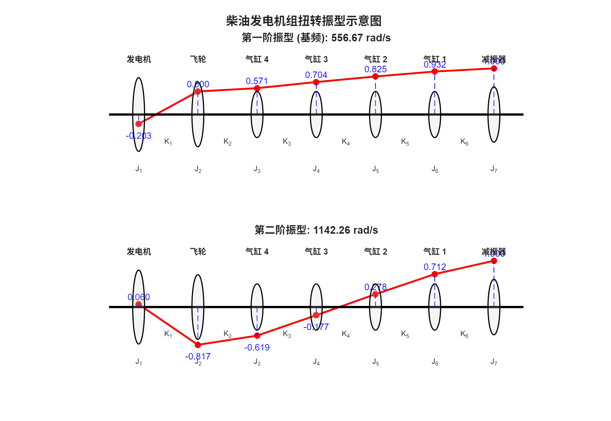

第23篇
5.1.2 多层框架剪切型建筑
剪切型建筑(shear building)是一种在楼层水平截面处无转动的结构。变形后的建筑形似仅受剪力作用的悬臂梁，因而得名。
图5.6\(a\)展示了一个三层剪切型建筑，被建模为具有三个自由度的框架。仅考虑框架在其平面内的侧移，由框架平面内竖向构件的弯曲变形引起。
为实现此类建筑变形，作如下假设:a) 所有楼板为刚性，仅可水平运动，故楼板梁与柱节点处无转动；b) 所有柱不可伸长且无质量；c) 建筑质量集中于楼层，从而将多层建筑的振动简化为有限自由度系统的振动。
将剪切型建筑简化为单跨模型较为方便。水平构件的位移由柱的弹性恢复力抵抗。若将柱视为等截面梁，采用固定端梁一端相对另一端下沉的标准分析方法，可得柱的总弯曲刚度为
其中\(E\)为材料杨氏模量(Young’s modulus)，\(I\)为一根柱的截面二次矩，\(\ell\)为层高(柱长)。

图5.6
利用达朗贝尔原理(d'Alembert's principle)，根据图5.6\(b\)的受力图，令作用于各质量上的力之和为零，即可方便地得到运动方程。第4.1.1节已针对两自由度系统说明该过程。
5.1.3 扭转系统
多缸往复机械的扭转振动通过简化的集中质量扭转系统(图5.7)研究，该系统将每缸旋转与往复部件的惯量集中于等效主轴上的离散点。安装于轴系上的部件，如飞轮、扭振减振器、联轴器及被驱动转子或螺旋桨，亦可建模为刚性圆盘。

图5.7
连杆由等效动力学系统替代，该系统由两个集中质量组成，一个位于曲柄端，另一个位于活塞端。
每个气缸内均有一个往复质量\({m}_{rec}\)，由活塞质量与连杆的等效质量组成；另有一个旋转质量，由曲柄臂、平衡重及连杆的等效质量组成，其惯量为\({J}_{\text{rot }}\)。每缸的平均惯量为
其中\(r\)为曲柄臂半径(crank throw radius)。
气缸间曲轴的扭转刚度源于曲柄销扭转与曲柄臂弯曲的耦合效应，可通过数值近似或实验测定。同样方法适用于测定末缸与飞轮间曲轴、联轴器及从动轴的刚度。整个系统可简化为图5.7所示的扭转模型:一系列刚性圆盘由无质量柔性轴串联而成。
Example 5.4
例5.4
某柴油发电机组已简化为图5.8所示的等效系统，其中\(J\)值单位为\(\mathrm{{kg}} \cdot {\mathrm{m}}^{2}\)，\(K\)值单位为\({10}^{6} \times \mathrm{{Nm}}/\mathrm{{rad}} : \;{J}_{1} = {11.863},\;{J}_{2} = {2.011},\;{J}_{3} = {J}_{4} = {J}_{5} = {J}_{6} = {0.167}\)，\({J}_{7} = {0.897},\;{K}_{1} = {1.062},\;{K}_{2} = {6.101},\;{K}_{3} = {K}_{4} = {K}_{5} = {3.05},\;{K}_{6} = {4.067}.\)。试估算扭转振动的基频与第二阶固有频率，并绘制相应振型。
解:\({\omega }_{1} = {552}\mathrm{{rad}}/\mathrm{{sec}},{\omega }_{2} = {1145}\mathrm{{rad}}/\mathrm{{sec}}\)。振型如图5.8所示。

图5.8
齿轮传动系统和汽车发动机驱动链系统亦按此方式建模。齿轮分支系统可按4.2.4节方法建模。通常采用一个无齿轮(或齿轮不改变转速)的等效系统，其固有频率与原系统相同。这是因为齿轮虽按传动比改变转速，但振动经齿轮传递时频率不变，仅振幅按相应比例变化。
在4.2.4节中，实际具有不同转速分支的系统被简化为所有部件转速相同的等效系统，通常取参考轴的转速。自该轴经传动比为\(i\)的齿轮进入其他分支时，实际\(J\)和\(K\)需乘以\({i}^{2}\)。若经过多级齿轮，则后续\(J\)和\(K\)需乘以各级齿轮比的平方。对于啮合齿轮，总惯量为参考齿轮的转动惯量加上(两个)折算齿轮的转动惯量乘以\({i}^{2}\)。
所得等效模型与原系统具有相同的固有频率及节点位置。但在简化分支中，角位移幅值需除以\(- i\)，而分支扭矩需乘以\(- i\)。
以下给出更直接的方法:在等效模型中，每根轴和每个圆盘保持实际转速，仅将从动齿轮凝聚消去。

图5.9
考虑齿轮分支系统的一部分(图5.9a)，其中(主动)轴1与(从动)轴2通过两个齿轮连接，齿轮惯量分别为\(J,{J}^{\prime }\)，节圆半径分别为\(r\)和\({r}^{\prime }\)。除轴刚度\({K}_{1}\)和\({K}_{2}\)以及圆盘转动惯量\({J}_{1}\)和\({J}_{2}\)外，图中还示出了各圆盘上的角位移与作用扭矩。
系统的运动由四个转矩和四个角位移描述。然而，由于啮合齿轮之间的相容性条件，它们各自只有三个是独立的。因此，将转矩\({M}^{\prime }\)和角位移\({\theta }^{\prime }\)视为因变量并消去它们是有益的，从而用图5.9\(b\)所示的等效模型替代原系统。轴1被选为参考轴。
角位移的相容性要求
而转矩的相容性要求
传递率定义为
在原系统中，轴2的刚度矩阵定义为
利用基于(5.16)的变换方程，
等效模型中轴2的刚度矩阵定义如下
质量矩阵同样定义
下文将两个由弹性轴段耦合的旋转圆盘视为一个有限元。对于从动轴的一个单元，单元矩阵为
图5.9中轴1的单元矩阵为
它们可通过将\(i = - 1\)代入通用表达式(5.17)获得。一般而言，对于不紧邻齿轮的单元，其中一个端部惯量为零。
另一种方法是基于表示啮合齿轮角位移相容性的约束方程对系统矩阵进行凝聚。
Example 5.5
例5.5
图5.10\(a\)所示的齿轮分支系统由三个转动惯量为\({J}_{1},{J}_{5}\)和\({J}_{6}\)的刚性圆盘以及三个半径为\(r, r/2\)和\(r/3\)、转动惯量为\({J}_{2},{J}_{3}\)和\({J}_{4}\)的刚性齿轮组成，它们通过三根扭转刚度为\({K}_{1},{K}_{2}\)和\({K}_{3}\)的轻质轴连接。推导自由振动方程。
解:在上分支，速比为\(i = - 2\)。在下分支，速比为\(i = - 3\)。对于图5.10\(b\)所示的等效系统，单元矩阵由方程(5.17)计算。
利用直接刚度法组装全局矩阵，得到:
和
角位移的全局向量
运动方程可写为
它们用于估算固有频率。

图5.10
图5.10所示的布置是一个典型船舶推进传动的简化模型，其中螺旋桨\({J}_{1}\)由低压涡轮\({J}_{5}\)和高压涡轮\({J}_{6}\)驱动。
计算出的固有频率与激励频率进行比较。通常，主要激励因素是螺旋桨扭矩的变化，该变化由叶片旋转时水动力的变化引起。这种变化的频率称为叶频(blade frequency)，其值为轴每转一圈的螺旋桨频率乘以叶片数。
Example 5.6
例5.6
图5.11所示的齿轮分支系统具有以下参数:\({J}_{1} = {950},{J}_{2} = {542},{J}_{3} = {406.7},{J}_{4} = {J}_{5} = {6.78},{J}_{7} = {13.55}\)、\({J}_{6} = {J}_{8} = {J}_{9} = {27.12}\left\lbrack {\mathrm{\;{kg}} \cdot {\mathrm{m}}^{2}}\right\rbrack , i = {76}/{24},{K}_{1} = {20.336} \cdot {10}^{6},{K}_{2} = {8.135} \cdot {10}^{6}\)、\({K}_{3} = {1.22} \cdot {10}^{6},{K}_{4} = {0.407} \cdot {10}^{6},{K}_{5} = {1.63} \cdot {10}^{6},{K}_{6} = {2.44} \cdot {10}^{6}\;\left\lbrack {\mathrm{{Nm}}/\mathrm{{rad}}}\right\rbrack .\)，计算其扭转振动的固有频率。

图5.11
解:将实际系统简化为等效模型，其中两个小齿轮被凝聚掉。对每个区段计算单元矩阵(5.17)，然后组装成全局刚度矩阵和质量矩阵。
全局刚度矩阵为
全局质量矩阵为
固有频率的数值如下:\({f}_{1} = 0,{f}_{2} = {14.26}\)、\({f}_{3} = {22.98},{f}_{4} = {35.34},{f}_{5} = {41.98},{f}_{6} = {50.52},{f}_{7} = {75.17}\mathrm{\;{Hz}}\)。
Matlab Demo
例题5.4 代码示例与分析
% 对应教材 例5.4
% --- 1. 计算部分 (与之前相同) ---
clc; % 清理命令行
clear; % 清理工作区
close all; % 关闭所有图像窗口
% 系统参数定义
J_vals = [11.863, 2.011, 0.167, 0.167, 0.167, 0.167, 0.897]; % 转动惯量 J (kg*m^2)
K_vals = [1.062, 6.101, 3.05, 3.05, 3.05, 4.067] * 1e6; % 扭转刚度 K (Nm/rad)
n_dof = length(J_vals);
% 构建质量矩阵 M 和刚度矩阵 K
M = diag(J_vals);
K = zeros(n_dof, n_dof);
K(1, 1) = K_vals(1);
K(1, 2) = -K_vals(1);
for i = 2:n_dof-1
K(i, i-1) = -K_vals(i-1);
K(i, i) = K_vals(i-1) + K_vals(i);
K(i, i+1) = -K_vals(i);
end
K(n_dof, n_dof-1) = -K_vals(end);
K(n_dof, n_dof) = K_vals(end);
% 求解广义特征值问题
[V, D] = eig(K, M);
omega = sqrt(diag(D)); % 固有频率 (rad/s)
mode_shapes = V; % 振型 (特征向量)
% 定义每个惯量盘在图上的x轴位置和相对大小
x_positions = 1:n_dof;
disk_radii = [0.8, 0.7, 0.5, 0.5, 0.5, 0.5, 0.6]; % 盘的相对半径
disk_width = 0.2; % 盘的厚度
% 定义中文标签
component_labels = {'发电机', '飞轮', '气缸 4', '气缸 3', '气缸 2', '气缸 1', '减振器'};
% --- 绘制第一阶振型 ---
subplot(2, 1, 1);
hold on;
% 绘制振型曲线
mode1 = mode_shapes(:, 2);
mode1_normalized = mode1 / max(abs(mode1));
plot(x_positions, mode1_normalized, 'r-', 'LineWidth', 2.5);
plot(x_positions, mode1_normalized, 'ro', 'MarkerFaceColor', 'r', 'MarkerSize', 8);
% 绘制垂直位移线
for i = 1:n_dof
y_pos = mode1_normalized(i);
% 绘制垂直线
plot([x_positions(i), x_positions(i)], [0, y_pos], '--b', 'LineWidth', 1);
num_str = sprintf('%.3f', y_pos); % 格式化数值为字符串
offset = 0.15; % 标签与数据点的垂直距离
if y_pos >= 0
% 正值，标签放在点上方
text(x_positions(i), y_pos + offset, num_str, 'HorizontalAlignment', 'center', 'FontSize', 12, 'Color', 'b');
else
% 负值，标签放在点下方
text(x_positions(i), y_pos - offset, num_str, 'HorizontalAlignment', 'center', 'FontSize', 12, 'Color', 'b', 'VerticalAlignment', 'top');
end
end
% 绘制物理系统示意图
draw_physical_system(x_positions, disk_radii, disk_width, J_vals, K_vals, component_labels);
title(sprintf('第一阶振型 (基频): %.2f rad/s', omega(2)), 'FontSize', 14);
ylabel('归一化角位移', 'FontSize', 12);
ylim([-1.5, 1.5]); % 调整Y轴范围以容纳标签
% --- 绘制第二阶振型 ---
subplot(2, 1, 2);
hold on;
% 绘制振型曲线
mode2 = mode_shapes(:, 3);
mode2_normalized = mode2 / max(abs(mode2));
plot(x_positions, mode2_normalized, 'r-', 'LineWidth', 2.5);
plot(x_positions, mode2_normalized, 'ro', 'MarkerFaceColor', 'r', 'MarkerSize', 8);
% 绘制垂直位移线
for i = 1:n_dof
y_pos = mode2_normalized(i);
% 绘制垂直线
plot([x_positions(i), x_positions(i)], [0, y_pos], '--b', 'LineWidth', 1);
num_str = sprintf('%.3f', y_pos); % 格式化数值为字符串
offset = 0.15; % 标签与数据点的垂直距离
if y_pos >= 0
% 正值，标签放在点上方
text(x_positions(i), y_pos + offset, num_str, 'HorizontalAlignment', 'center', 'FontSize', 12, 'Color', 'b');
else
% 负值，标签放在点下方
text(x_positions(i), y_pos - offset, num_str, 'HorizontalAlignment', 'center', 'FontSize', 12, 'Color', 'b', 'VerticalAlignment', 'top');
end
end
% 绘制物理系统示意图
draw_physical_system(x_positions, disk_radii, disk_width, J_vals, K_vals, component_labels);
title(sprintf('第二阶振型: %.2f rad/s', omega(3)), 'FontSize', 14);
ylabel('归一化角位移', 'FontSize', 12);
ylim([-1.5, 1.5]); % 调整Y轴范围以容纳标签
% 添加总标题
sgtitle('柴油发电机组扭转振型示意图 ', 'FontSize', 16, 'FontWeight', 'bold');
% --- 用于绘制物理系统的辅助函数
function draw_physical_system(x_pos, radii, width, J, K, labels)
n = length(x_pos);
line([min(x_pos)-0.5, max(x_pos)+0.5], [0, 0], 'Color', 'k', 'LineWidth', 3);
for i = 1:n
rectangle('Position', [x_pos(i)-width/2, -radii(i), width, 2*radii(i)], ...
'Curvature', [1 1], 'FaceColor', [0.8 0.8 0.8], 'EdgeColor', 'k', 'LineWidth', 1.5, 'FaceAlpha', 0.2);
text(x_pos(i), -1.2, sprintf('J_%d', i), 'HorizontalAlignment', 'center', 'FontSize', 10);
text(x_pos(i), 1.2, labels{i}, 'HorizontalAlignment', 'center', 'FontSize', 11, 'FontWeight', 'bold');
end
for i = 1:n-1
text(x_pos(i)+0.5, -0.6, sprintf('K_%d', i), 'HorizontalAlignment', 'center', 'FontSize', 10);
end
axis off;
hold off;
end

这两幅图表展示了柴油发电机组在两个最低的固有频率下，系统上各个部件（发电机、飞轮、气缸、减振器）扭转振动的相对形态。振幅经过“归一化”处理，即选取振幅最大的点定为1.000，其他点的振幅则表示与该点的相对大小和方向。
第一阶振型 (基频: 552.26 rad/s)
这是系统最容易发生的、能量最低的振动模式。
- 关键特征： 整个系统存在 一个节点（振幅为零的点），该节点位于 飞轮 (J₂) 和 气缸4 (J₃) 之间。
- 物理运动描述：
- 在此振型下，系统明显分为两大部分，它们以相反的方向进行扭转。
- 第一部分： 发电机 (J₁, 振幅+1.000) 和 飞轮 (J₂, 振幅+0.946) 同向扭转，构成振动的主体，振幅最大。
- 第二部分： 所有气缸 (J₃ 到 J₆) 和 减振器 (J₇) 作为另一组，以相反方向扭转。它们的振幅相对小很多，从 J₃ 的 -0.053 变化到 J₇ 的 -0.198。
- 结论： 这种“一头大一头小”的单节点振动是典型的曲轴-发电机系统的基频振型。
第二阶振型 (1145.18 rad/s)
这是一个更高阶、能量更高的振动模式，形态更为复杂。
- 关键特征： 系统同样存在 一个节点，但位置向后移动，位于 气缸4 (J₃) 和 气缸3 (J₄) 之间。
- 物理运动描述：
- 第一部分： 发电机 (J₁, 振幅+1.000)、飞轮 (J₂, 振幅+0.485) 和 气缸4 (J₃, 振幅+0.076) 共同以相同的方向扭转，但振幅从发电机端开始急剧衰减。
- 第二部分： 气缸3 (J₄) 到 减振器 (J₇) 的所有部件以相反方向扭转。其中，减振器 (J₇) 的反向振幅最大，达到了 -0.428，说明它在抑制这种高频振动时起到了关键作用。
- 结论： 在第二阶振型中，曲轴本身出现了更复杂的扭转变形。发电机端和减振器端的反向运动幅度都比较大，这对曲轴的疲劳寿命和减振器的性能提出了更高的要求。